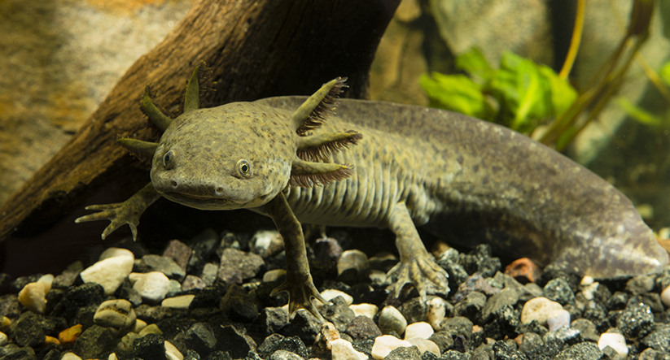
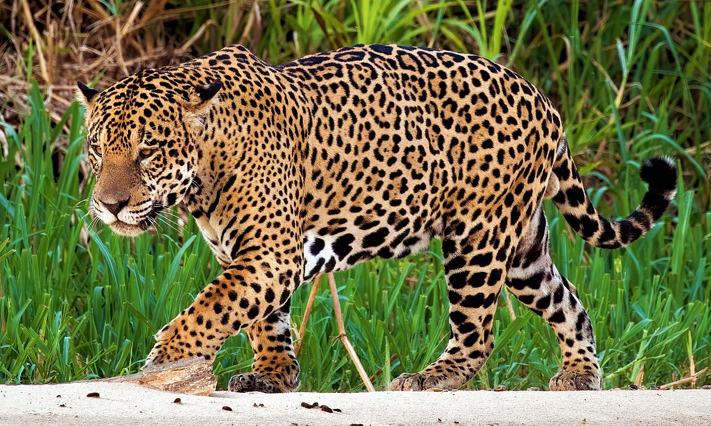
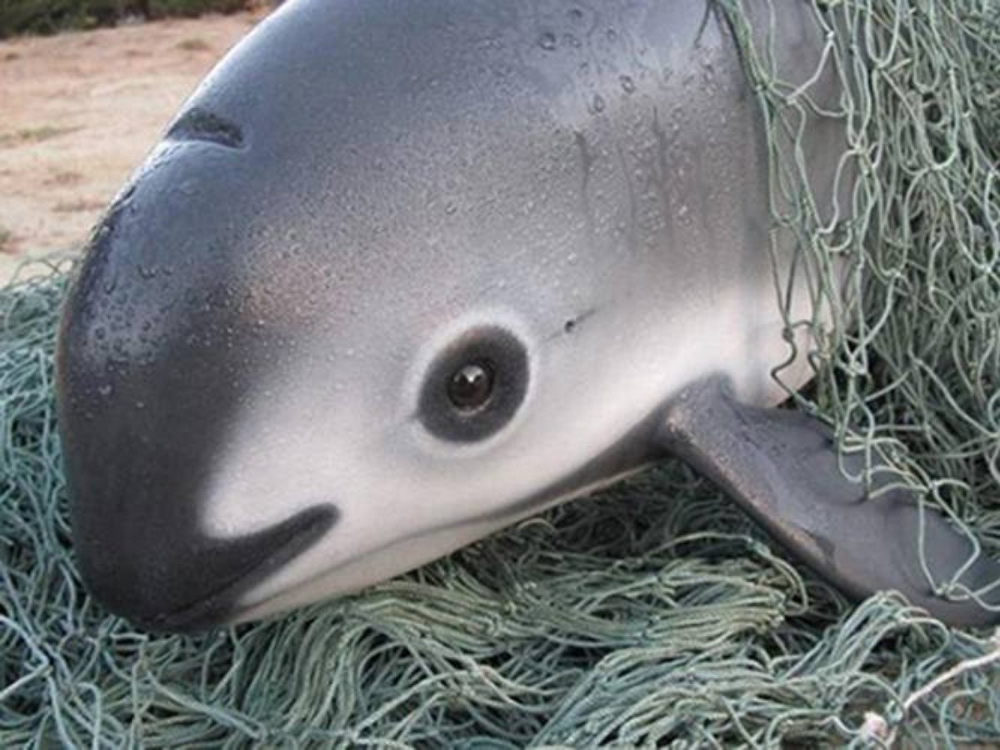

Contacto
Puedes escribirme a:
Divulgación científica sobre animales desde la Biología
¡Bienvenido a JuAnimalia! Aquí exploramos el fascinante mundo de los animales con el poder de la Biología.
Mi nombre es Juan José Gavilán De La Torre. Soy estudiante de la Licenciatura en Biología y divulgador científico apasionado por explicar cómo funciona el mundo animal de forma entretenida y comprensible para todo el mundo.
Aquí podrás ver algunos de los videos, publicaciones y proyectos que he realizado en redes sociales.
Ajolote mexicano (Ambystoma mexicanum)
Es un anfibio endémico de los canales de Xochimilco, en Ciudad de México, famoso por su capacidad única de regenerar extremidades, órganos e incluso partes del cerebro...
Jaguar (Panthera onca)
Es el felino más grande de América y habita principalmente en selvas del sur de México, como la Selva Lacandona en Chiapas...
Vaquita marina (Phocoena sinus)
Es el cetáceo más pequeño del mundo y uno de los más amenazados: solo vive en el Alto Golfo de California...
¿Eres parte de una escuela, proyecto, medio de comunicación o marca interesada en colaborar? Aquí encontrarás información sobre cómo contactarme.
Puedes escribirme a: